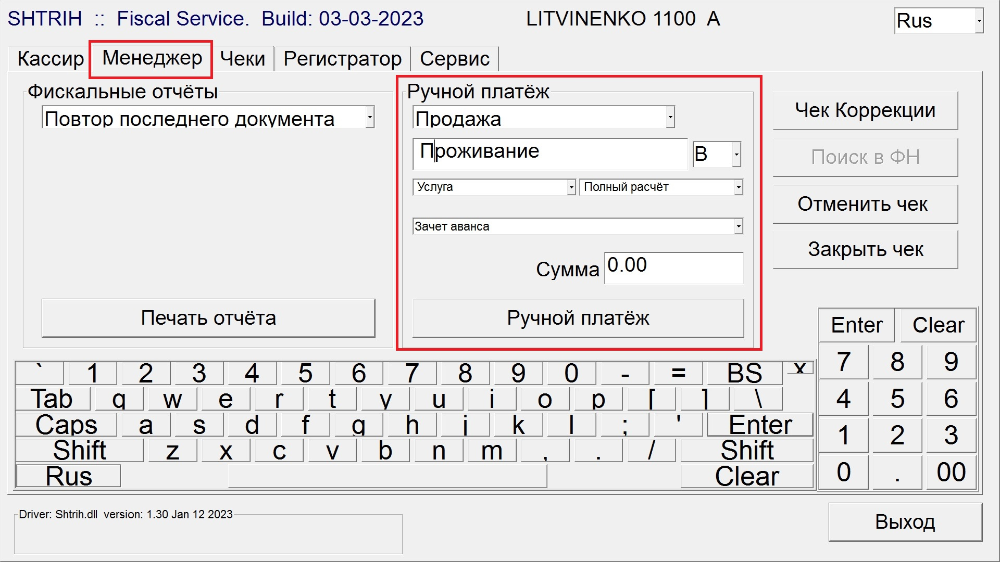

Если оплата по DB, то все ночи проживания автоматически падают на второе окно. Соответственно все доп. услуги, с оплатами за них, принимаем на первое.
Если оплата по DB, то все ночи проживания автоматически падают на второе окно. Соответственно все доп. услуги, с оплатами за них, принимаем на первое.
Чтобы принять оплату наличными средствами: Cashiering → Billing → Ищем нужный номер → Payment → CA (CASH) → В Amount пишем необходимую сумму → Post.
Печатаем квитанцию, фискальный чек об оплате крепим к квитанции. Ставим печать “Оплачено”, расписываемся, ставим дату оплаты.
Квитанцию с чеками убрать в ячейку или отдать гостю.
Чтобы принять оплату по карте: Cashiering → Billing → Ищем номер → Payment → CP сумма → Post. Чеки преавторизации выкидываем, 1 чек авторизации - в кассу, 2 чек авторизации вместе с фискальным чеком крепим к квитанции. Ставим печать “Оплачено”, расписываемся, ставим дату оплаты. Квитанцию с чеками убрать в ячейку или отдать гостю.
Если гость подошел оплачивать номер заранее:
Через Arrivals или Update Reservation ищем бронирование → Options → Deposit/CXL → Payment - в зависимости от метода оплаты выбираем CA или CP - Amount пишем сумму → Ok. Печатаем квитанцию, необходимые чеки крепим, ставим печать.
После оплаты поменять в брони Payment на CA.
Квитанцию с чеками об оплате отдать гостю.
При принятии оплаты по CA или CP Опера будет предлагать распечатать Receipt.
При необходимости, все Receipt можно найти:
Cashiering → Cashier Functions → Receipt History → Search → последние сформированные квитанции будут в самом низу списка → Print
Ставим прямоугольную печать “ОПЛАЧЕНО”, расписываемся в поле Кассир, ставим дату. К квитанции крепим фискальный авансовый чек.
“Фолио” (финальный счет), формируется после Check Out, но автоматически не печатается. При выселении печатается фискальный чек, его крепим к фолио. Ставим подпись, круглую печать.
HRS FiscalService → вкладка “Менеджер” →

В папке с заездами групп, напротив такой группы будет пометка «пробить чек «зачет аванса» в день выезда.
Это значит, что ночной супервайзер должен пробить чек «зачет аванса» вручную на сумму проживания группы в день ее выезда.
Сначала сверяем, что сумма на PM совпадает с суммой в счете. Если не совпадает, нужно найти причину. Например, забыли напостить штраф за незаезд или слетел тариф и т.п. Как только нашли причину, производим корректировку.
После того как PM окончательно сходится, выселяем его и печатаем фолио.
Далее пробиваем чек в HRS FiscalService во вкладке Менеджер.
Слово «Проживание» пишем вручную, так же как и сумму. Затем нажимаем «Ручной платеж».
Пробитый фискальный чек прикрепляем к фолио. Также, будет заранее прописана инфа, если счет нужно будет отдать. Если такой инфы нет, то кладем счет в папку групп для AR ledger.